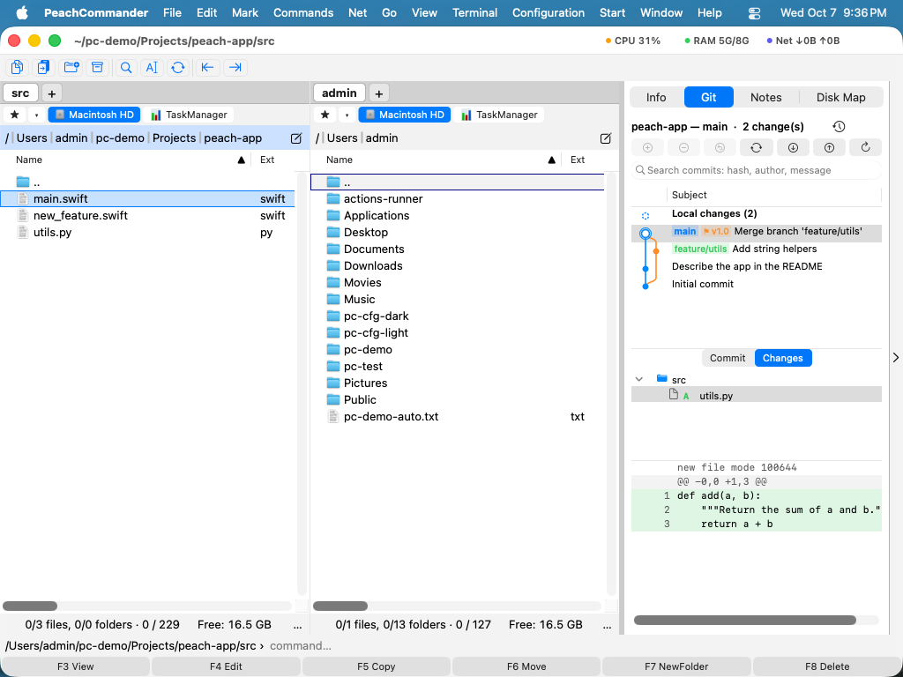

Git
El complemento Git muestra el estado de un repositorio Git directamente en el panel de archivos: sin una
aplicación aparte y sin terminal. Añade dos columnas, un submenú Git, un panel acoplado para preparar y
confirmar, y ventanas para el historial, la autoría, las ramas, los conflictos y el rebase. Usa el git que
ya está instalado en su Mac. Es un complemento, así que puede desactivarlo o quitarlo en Configuración ▸
Complementos….
Qué añade
- Dos columnas en la lista — Estado de Git y Rama. Cada archivo muestra un icono y una palabra de estado breve (Modificado, Añadido, Borrado, Sin seguimiento, Renombrado, Copiado, Conflicto, Ignorado, Tipo cambiado), con (preparado) cuando el cambio ya está en el índice; la columna Rama indica la rama en la que está el repositorio de ese archivo. Active las columnas en Configuración ▸ Columnas… (véase Modos de vista y orden).
- Un menú Git — en Comandos ▸ Git, y en el menú contextual de un archivo.
 (Figura: Estado de Git indica la rama y cada cambio del árbol de trabajo.)
(Figura: Estado de Git indica la rama y cada cambio del árbol de trabajo.)
El panel: preparar, confirmar, sincronizar
Comandos ▸ Git ▸ Panel acopla una vista que agrupa el árbol de trabajo en preparado, modificado y sin seguimiento. Seleccione archivos y use Preparar, Quitar de preparación o Descartar…, escriba un mensaje y pulse Confirmar — con Enmendar para plegar el cambio en la confirmación anterior. Fetch, Traer y Enviar están al lado, donde la confirmación ocurre de todos modos; los tres muestran progreso y pueden cancelarse.
Se confirma el índice, no git commit -a: lo que preparó es lo que se confirma.
Historial en el panel
Bajo sus botones, el panel muestra el historial de todas las ramas, ramas remotas y etiquetas como un grafo dibujado, con la copia de trabajo como primera fila. La zona inferior sigue la selección:

- Cambios locales muestra los archivos preparados, cambiados y sin seguimiento y el cuadro de commit descrito arriba.
- Un commit muestra Commit — autor, committer, fecha, hash, padres, refs, firma y mensaje completo — o Cambios.
- Cambios lista los archivos afectados como árbol y el diff del archivo elegido con números de línea; un doble clic abre la ventana de comparación.
- El menú contextual copia el hash o el asunto, revierte, hace cherry-pick, abre el commit en la web y limita la lista a Solo la rama actual.
- Desde el mismo menú un commit se puede extraer, recibir una rama o etiqueta nueva, fusionarse en la rama actual, servir de base para hacer rebase o restablecer la rama actual, o iniciar un rebase interactivo.
- El campo de búsqueda sobre la lista busca en todo el historial — mensaje, nombre y correo del autor, o un hash y sus primeros caracteres — y muestra los resultados sin el grafo.
Más en el panel y en el menú Git
La copia de trabajo, el historial y el menú Comandos ▸ Git ofrecen más que confirmar:
- Un archivo preparado o modificado seleccionado muestra su diff bajo la lista; las líneas seleccionadas o un fragmento entero se preparan, se quitan de la preparación o se descartan desde su menú contextual.
- El campo de commit admite varias líneas — un asunto, una línea en blanco, un cuerpo —, confirma con Cmd+Retorno y cuenta los caracteres del asunto; el botón de menú de al lado guarda tus últimos mensajes de commit.
- Mostrar en el panel izquierdo y Mostrar en el panel derecho llevan un panel de archivos a un archivo de la lista o de los cambios de un commit, sin que el panel Git se mueva; los archivos guardados por Git LFS se marcan con LFS.
- Los stashes aparecen en el historial como pequeños cuadrados sobre el commit en el que se hicieron, con Aplicar stash, Aplicar y quitar stash y Eliminar stash… en su menú contextual.
- Reflog… lista cada movimiento de HEAD; un commit perdido por un reset o una rama eliminada vuelve con Nueva rama aquí….
- Ajustes del repositorio… añade, renombra, redirige y elimina remotos, añade, actualiza y elimina submódulos, gestiona worktrees y da solo a este repositorio un nombre y un correo para los commits.
- Crear repositorio aquí… y Clonar repositorio… trabajan en la carpeta del panel activo, y el reloj junto al título del panel vuelve a un repositorio reciente.
Cuando git se detiene, y los ajustes
- Push establece la rama remota de seguimiento la primera vez que se envía una rama. Si el remoto tiene commits que a esta rama le faltan, ofrece Traer y luego enviar o Forzar envío, siempre con un arrendamiento que rechaza si alguien envió desde tu último fetch; Forzar envío (con arrendamiento)… está también en el menú contextual de Push.
- Si Pull ve que la rama y su rama remota de seguimiento han divergido, pregunta si fusionar o hacer rebase en lugar de detenerse con el mensaje de git.
- Una fusión, un cherry-pick, un revert, un rebase o una serie de parches que se detiene en un conflicto muestra sobre el historial un aviso con Continuar y Abortar…; un commit de fusión se revierte o se aplica frente a su primer padre.
- Selecciona dos commits para compararlos, o varios para aplicarlos de una vez con cherry-pick. Comparar con la copia de trabajo y Guardar como parche… están en el menú del historial, Aplicar parches… en el menú Git.
- El campo de búsqueda admite también filtros —
author:name,path:folder/,since:"2 weeks ago",until:2026-10-01—, solos o junto con palabras. - Bisect: marcar como malo y Bisect: marcar como bueno en el menú del historial inician un bisect; el aviso ofrece entonces Bueno, Malo, Omitir y Terminar bisect hasta que git nombra el primer commit malo.
- Guardar en el stash archivos seleccionados o todos los cambios pide un mensaje y si incluir los archivos sin seguimiento o conservar el índice. Los archivos en Git LFS pueden bloquearse y desbloquearse, y seguirse su tipo de archivo.
- En la lista de ramas, una rama puede renombrarse (Renombrar…), recibir una rama remota de seguimiento (Establecer rama remota de seguimiento…) o eliminarse en su servidor (Eliminar en el remoto…).
- Ajustes ▸ Git fija el programa git, tu nombre y correo globales, cómo trabaja Pull, el fetch en segundo plano, qué muestra el historial y cómo se ven sus fechas, la firma, el sign-off y los hooks de los commits, y los espacios y las líneas de contexto de los diffs. Los autores llevan iniciales de color en el historial.
Archivos, fusión, Git flow y pull requests
- Archivos, junto a Commit y Cambios, muestra todo el árbol en el commit seleccionado; un archivo se abre con números de línea, y su menú lo compara con la copia de trabajo, lo guarda en otro sitio o lo devuelve a la copia de trabajo (Restaurar esta versión…).
- Editor de fusión… — en un archivo con conflicto en el panel, en el aviso, en Resolver conflicto… y en el menú Git — muestra el conflicto actual como nuestra, base y suya lado a lado y todo el archivo debajo, editable. Tomar el nuestro, Tomar el suyo, ambos en cualquier orden o Tomar la base deciden un conflicto, y Guardar y preparar marca el archivo como resuelto cuando no quedan marcadores.
- El símbolo de rama en la cabecera del panel es el menú Git flow: Empezar funcionalidad…, Empezar versión… y Empezar corrección… crean la rama desde develop o main, y Terminar … la fusiona de vuelta: una versión o corrección en main con una etiqueta y luego en develop. Terminar de nuevo tras un conflicto sigue donde se detuvo.
- Pull requests… en el menú Git lista las pull requests abiertas (merge requests en GitLab) y las incidencias del proyecto al que apuntan los remotos, con las comprobaciones de cada una; extrae una pull request en una rama propia y abre una nueva para la rama actual.
- Necesita un token de acceso personal, introducido en esa ventana y guardado en el llavero; el token solo se envía a la API del servicio. Con un token, un símbolo junto a la rama en la cabecera del panel muestra si la CI pasó para el commit actual.
- Ajustes ▸ Git nombra las ramas y prefijos de Git flow y, en Alojamiento, los servidores GitLab o GitHub Enterprise autoalojados.
Historial, autoría y la web
- Historial… enumera las confirmaciones con un grafo de carriles, las referencias que apuntan a cada una
(
● main,↗ origin/main,⚑ v1.0) y los archivos que cada una tocó. Intro o un doble clic abre la versión de ese archivo frente a su antecesora en la ventana de comparación. Revertir confirmación y Cherry-pick están ahí, y ambos se niegan de antemano si el árbol de trabajo no está limpio. - Historial del archivo… es la misma ventana para un solo archivo.
- Autoría (lista)… muestra cada línea con su confirmación, autor y fecha. Autoría en el editor pone la misma información en el margen del editor, junto a los números de línea: pase el puntero por una línea para ver el mensaje, haga clic para abrirla frente a su antecesora.
- Abrir en la web abre el archivo, la confirmación o la rama en GitHub, GitLab, Bitbucket o Azure DevOps, construido a partir de la URL del remoto: sin cuenta y sin token. Con un servidor cuya forma de enlace no conoce, ofrece la página del repositorio en vez de adivinar.
Ramas, guardados y etiquetas
Ramas, guardados y etiquetas… enumera las tres cosas. Cambiar de rama, crearla, fusionarla o borrarla; enviar, sacar o descartar un guardado; crear, borrar o enviar una etiqueta, o cambiar a ella — una etiqueta no es una rama, así que avisa de antemano de que HEAD quedará desacoplado. Recuperar, Traer y Enviar están en la misma ventana y pueden cancelarse mientras corren.
Enviar una etiqueta es una acción aparte a propósito: git push no se lleva las etiquetas.
Conflictos
Resolver conflicto… enumera las regiones en conflicto del archivo bajo el cursor y toma una decisión para
cada una: las nuestras, las suyas, ambas, o dejarla abierta. Luego Escribir archivo o Escribir y
preparar. Se niega a preparar mientras quede una región abierta — Git confirmaría tan contento unas marcas
<<<<<<< — y se niega a tocar un archivo cuyas marcas no puede leer en vez de adivinarlas. Para una región
que necesita entrelazar ambos lados a mano, Abrir en el editor está a un botón.
Rebase
Rebase… enumera las confirmaciones por delante del upstream — las que nadie más tiene aún — y le permite aplastarlas, corregirlas, descartarlas, reordenarlas o reescribir su mensaje antes de reescribir la rama. Si un rebase se detiene en un conflicto, la misma ventana pasa a Continuar / Saltar confirmación / Abortar rebase, de modo que un rebase a medias no tiene que terminarse en un terminal.
Ignorar archivos, y las credenciales
- Ignorar este archivo…, Ignorar este tipo de archivo… e Ignorar esta carpeta… añaden el patrón
adecuado a
.gitignore— anclado donde corresponde, para que ignorar esta carpetabuildno ignore todas las carpetas llamadasbuild. - Credenciales… informa de cómo se autentica este repositorio: SSH o HTTPS, si hay un ayudante de credenciales configurado, si hay un agente SSH en marcha con una clave. Donde ayuda, ofrece una única acción: dejar que Git guarde las credenciales en el Llavero de macOS. El complemento nunca pide, muestra ni guarda una frase de contraseña.
Notas
- El complemento usa el Git del sistema, en
/usr/bin/git, o el programa elegido en Ajustes ▸ Git. Si Git no está instalado, los comandos informan de que Git no está disponible. (Las Command Line Tools de Xcode lo incluyen.) - El estado del repositorio se lee una vez por carpeta y se guarda en caché, para que desplazarse por un repositorio grande siga siendo rápido; la caché se refresca tras cualquier comando que cambie el árbol, y sigue a una confirmación hecha fuera de la aplicación.
- Los árboles de trabajo enlazados y los submódulos están soportados: un archivo dentro de un submódulo muestra el estado y la rama del submódulo, no los del repositorio padre.
- Cada lista tiene un menú contextual, Retorno ejecuta su acción principal y Cmd+R recarga la ventana.
- Git LFS,
gpgpara commits firmados y los asistentes de credenciales se encuentran en las carpetas de Homebrew y MacPorts aunque la app se haya abierto desde el Finder.